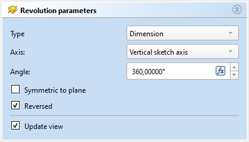

PartDesign Revolution/it
|
|
| Posizione nel menu |
|---|
| Part Design → Crea una funzione additiva → Rivoluzione |
| Ambiente |
| PartDesign |
| Avvio veloce |
| Nessuno |
| Introdotto nella versione |
| - |
| Vedere anche |
| Gola |
Descrizione
Lo strumento Rivoluzione crea un solido ruotando uno schizzo selezionato o un oggetto 2D attorno ad un dato asse.
{kind=link}
Sopra: lo schizzo (A) viene ruotato di 270 gradi in senso antiorario attorno all'asse (B); il solido risultante (C) è mostrato sulla destra.
Utilizzo
- Selezionare uno schizzo singolo o una o più facce dal Corpo.
- Esistono diversi modi per richiamare lo strumento:
- Premere il pulsante
 Rivoluzione.
Rivoluzione. - Selezionare l'opzione Part Design → Crea una funzione additiva → Rivoluzione dal menu.
- Premere il pulsante
- Impostare i parametri della rivoluzione, vedere le Opzioni di seguito.
- Premere il pulsante OK.
Opzioni
Quando si crea una rivoluzione, o dopo aver fatto doppio clic su una rivoluzione esistente nella Vista_albero, viene visualizzato il pannello delle attività Parametri Rivoluzione. Il quale offre le seguenti impostazioni:
{kind=link}

Tipo
disponibile dalla versione 1.0
Tipo offre cinque modi diversi per specificare l'angolo della rivoluzione:
Dimensione
Inserire un valore numerico per l'Angolo della rivoluzione. Con l'opzione Simmetrica al piano la rivoluzione estenderà metà dell'angolo dato su entrambi i lati dello schizzo o della faccia.
Fino all'ultimo
La rivoluzione si estende fino all'ultima faccia del supporto, che incontra nella sua direzione. Se non c'è alcun supporto, verrà visualizzato un messaggio di errore.
Fino al primo
La rivoluzione si estende fino alla prima faccia del supporto, che incontra nella sua direzione. Se non c'è alcun supporto, verrà visualizzato un messaggio di errore.
Fino alla faccia
La rivoluzione si estende fino a una faccia. Premere il pulsante Faccia e selezionare una faccia o un piano di riferimento dal corpo.
Due dimensioni
Questo consente di inserire un secondo angolo nella direzione opposta in cui l'estrusione si deve estendere. Le direzioni possono essere invertite selezionando l'opzione Invertita.
Asse
Specifica l'asse di rivoluzione:
- Asse verticale dello schizzo: seleziona l'asse verticale dello schizzo.
- Asse orizzontale dello schizzo: seleziona l'asse orizzontale dello schizzo.
- Linea di costruzione: seleziona una linea di costruzione dallo schizzo, utilizzato per la rivoluzione. L'elenco a discesa conterrà una voce per ciascuna linea di costruzione. La prima linea di costruzione sarà etichettata Linea di costruzione 1
- Asse (X/Y/Z) di base: seleziona l'asse X, Y o Z dell'origine del corpo.
- Seleziona riferimento...: permette la selezione di un bordo dritto o di una linea di riferimento del Corpo.
Notare che quando si cambia l'asse, l'opzione Invertita potrebbe essere (de)selezionata automaticamente.
Angolo
Definisce l'angolo della rivoluzione. Questa opzione è disponibile solo se Tipo è Dimensione o Due dimensioni. Non sono possibili angoli superiori a 360°. Né lo sono valori negativi, utilizzare invece l'opzione Invertita.
introduced in 1.1: If the Show interactive draggers when editing features preference is selected, the angle can be adjusted with an interactive gizmo in the 3D View.
2* angolo
disponibile dalla versione 1.0
Definisce l'angolo della rivoluzione nella direzione opposta. Questa opzione è disponibile solo se Tipo è Due dimensioni e Angolo è minore di 360°.
Simmetrica al piano
Selezionare questa opzione per estendere metà dell'angolo specificato per la rivoluzione su entrambi i lati dello schizzo o della faccia. Questa opzione è disponibile solo se Tipo è Quota.
Invertita
Inverte la direzione della rivoluzione.
Proprietà
Dati
Part Design
- DatiRefine (
Bool)
Revolution
- DatiType (
Enumeration) - DatiBase (
Vector): (read-only) - DatiAsse (
Vector): (read-only) - DatiAngolo (
Angle) - DatiUp To Face (
LinkSub) - DatiAngle2 (
Angle) - DatiReference Axis (
LinkSub)
Sketch Based
- DatiProfile (
LinkSub) - DatiMidplane (
Bool) - DatiReversed (
Bool) - DatiAllow Multi Face (
Bool)
Limitazioni
- versione 0.21 e precedenti: Uno
 ShapeBinder non può essere utilizzato come profilo.
ShapeBinder non può essere utilizzato come profilo. - 0.21 and below: Quando si utilizza uno
 SubShapeBinder per il profilo, la selezione del binder nella Vista ad albero fallirà, ovvero la faccia del binder dovrà essere selezionata nella Vista 3D.
SubShapeBinder per il profilo, la selezione del binder nella Vista ad albero fallirà, ovvero la faccia del binder dovrà essere selezionata nella Vista 3D.
- Helper tools: New Body, New Sketch, Attach Sketch, Edit Sketch, Validate Sketch, Check Geometry, Sub-Shape Binder, Clone
- Modeling tools:
- Additive tools: Pad, Revolution, Additive Loft, Additive Pipe, Additive Helix, Additive Box, Additive Cylinder, Additive Sphere, Additive Cone, Additive Ellipsoid, Additive Torus, Additive Prism, Additive Wedge
- Subtractive tools: Pocket, Hole, Groove, Subtractive Loft, Subtractive Pipe, Subtractive Helix, Subtractive Box, Subtractive Cylinder, Subtractive Sphere, Subtractive Cone, Subtractive Ellipsoid, Subtractive Torus, Subtractive Prism, Subtractive Wedge
- Boolean: Boolean Operation
- Dress-up tools: Fillet, Chamfer, Draft, Thickness
- Transformation tools: Mirror, Linear Pattern, Polar Pattern, Multi-Transform, Scale
- Additional tools: Shape Binder, Involute Gear, Sprocket, Shaft Design Wizard
- Context menu: Suppressed, Set Tip, Move Object To…, Move Feature After…
- Preferences: Preferences, Fine tuning
- Getting started
- Installation: Download, Windows, Linux, Mac, Additional components, Docker, AppImage, Ubuntu Snap
- Basics: About FreeCAD, Interface, Mouse navigation, Selection methods, Object name, Preferences, Workbenches, Document structure, Properties, Help FreeCAD, Donate
- Help: Tutorials, Video tutorials
- Workbenches: Std Base, Assembly, BIM, CAM, Draft, FEM, Inspection, Material, Mesh, OpenSCAD, Part, PartDesign, Points, Reverse Engineering, Robot, Sketcher, Spreadsheet, Surface, TechDraw, Test Framework
- Hubs: User hub, Power users hub, Developer hub